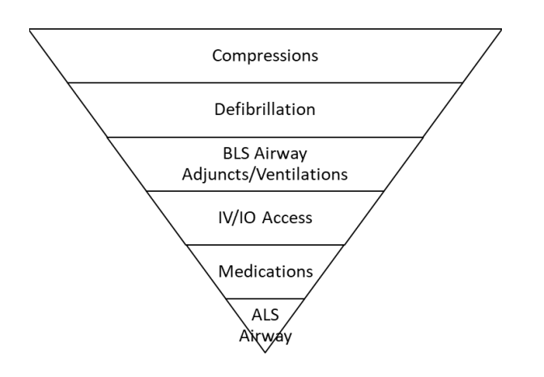

| History | Signs and Symptoms | Differential |
|---|---|---|
|
• DNR form • Signs of lividity, rigor mortis • Events leading to arrest • Estimated downtime • Past medical history/renal dialysis • Existence of terminal illness • Medication |
• Unresponsive • Apneic • Pulseless |
• Medical vs. Trauma • V. fib vs Pulseless V. tach • Asystole • Pulseless Electrical Activity (PEA) |
High Performance CPR
• Chest Compressions at a depth of at least 2 inches
• Rate of compressions between 100-120 per minute
• Allowing for complete chest recoil
• Minimizing interruptions between cycles to less than 10 seconds
(Compression fraction >80%)
• Switching providers frequently, about every 2 minutes or sooner if
fatigued
• Crews should coordinate their duties keeping the call priorities in
mind. Intervention priorities are listed below in a general format (in
order of highest to lowest). ** Suspected or known pre-existing
conditions such as (opioid poisoning, obstructed airway, etc.) should
alter the order of listed priorities:

1. Check airway, breathing and circulation.
2. If pulseless, begin high quality CPR, apply AED and follow the
prompts.
a. If the AED indicates “SHOCK ADVISED”, call out “CLEAR!”, check
for the safety of others and follow the prompts on the AED to
deliver the defibrillation.
b. Immediately resume CPR after defibrillation.
3. Ventilate with 100% oxygen.
4. Manage airway with appropriate adjunct. Refer to
AIRWAY MANAGEMENT
Protocol.
5. Follow current AHA BLS guidelines.
6. Relay information to incoming ambulance and/or initiate transport
and call for intercept per
INTERCEPT CRITERIA.
7. If return of pulses, refer to
RETURN OF SPONTANEUS CIRCULATION
Protocol.
1. Continue EMR / BLS TREATMENT.
2. Ensure high quality CPR at all times.
3. Refer to appropriate dysrhythmia protocol:
a.
ASYSTOLE / PEA
b.
V-FIB / PULSELESS V-TACH
4. Keep the following in mind:
a. Rhythm checks,
Defibrillation
and medications are completed at the top of the 2 minute cycle.
b. Compression fraction should be greater than 80% and EtCO2 greater
than 10-20 mmHg.
5. Consider placement of advanced airway per the
AIRWAY MANAGEMENT
Protocol
. 6. If return of pulses, refer to
RETURN OF SPONTANEOUS CIRCULATION
Protocol.
PEARLS
• Early and effective CPR and defibrillation are the most important
therapies for cardiac arrest care.
• Team Focused Approach / Pit-Crew Approach recommended; assign
responders to predetermined tasks.
• Efforts should be directed at high quality and continuous
compressions with limited interruptions and early defibrillation
when indicated.
• Consider early IO placement if available and/or difficult IV
access anticipated.
Compressions
• Minimize interruptions in chest compression, as pauses rapidly
return the blood pressure to zero and stop perfusion to the heart and
brain.
• Chest compressions should be reinitiated immediately after
defibrillation as pulses, if present, are often difficult to detect
and rhythm and pulse checks interrupt compressions.
• Continue chest compressions between completion of AED analysis and
AED charging.
• Effectiveness of chest compressions decreases with any movements and
thus patients should be resuscitated as close to the point at which
they are first encountered and should only be moved if the conditions
on scene are unsafe or do not operationally allow for resuscitation.
• Performing manual chest compressions in a moving vehicle may pose a
provider safety concern.
Ventilation
• Avoid excessive ventilation. If no advanced airway (
BIAD
or ETT ) compression to ventilation ratio is 30:2. If advanced airway
is in place, ventilate 10 breaths per minute (1 ventilation every 6
seconds) with continuous, uninterrupted compressions.
• Do not interrupt compression to place endotracheal tube. Consider
BIAD
first to limit interruptions.
• Reassess and document
BIAD
and/or endotracheal tube placement and EtCO2 frequently, after every
move, and at transfer of care.
EtCO2
• Quantitative end-tidal CO2 (EtCO2) should be used to monitor
effectiveness of chest compressions.
a. EtCO2 > 10-20 mmHg is indicative of quality CPR.
b. Abrupt sustained increase in EtCO2 is indicative of potential
ROSC.
Defibrillation
• Follow manufacture's recommendations concerning defibrillation
energy. If the manufacturer’s recommendation is unknown, use the
highest setting possible. For refractory VF/pulseless VT, if allowable
per the manufacture’s recommendations, different pad placement (e.g.
anterior/lateral versus anterior/posterior) may be attempted.
Mechanical CPR, Heads-up CPR, Hand-held Chest Pumping and
Impedance Threshold Devices
• Devices should be used in accordance with the devices specific
instructions.
• Mechanical CPR should not delay the initiation of high quality
manual CPR.
• Interruptions in CPR to apply device should be limited to 10 seconds
or less.